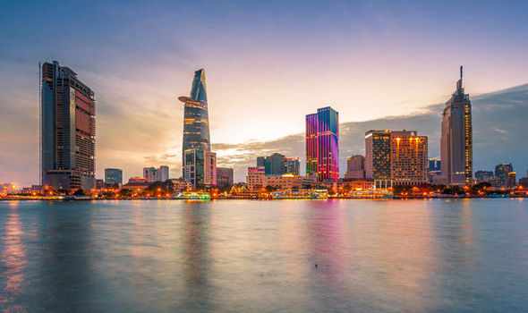

Hello Welly - Small City in New Zealand
Oriental Bay
Oriental Bay is a suburb of Wellington, the capital city of New Zealand. Located close to the Central Business District on Wellington Harbour, it has the closest beaches to the central city and is thus a popular spot both for living and for visiting. Oriental Bay is situated against the northern slope of Mount Victoria, 1.5 kilometres southeast of the city centre, at the start of a coastal route which continues past Hataitai around Evans Bay. The suburb was named after one of the first ships to bring settlers to Wellington.
Just a few minutes walk from the city, this golden sand beach is a top spot for a bit of walking, cycling or people watching. It's a safe swimming spot for families and plays host to beach sporting events during summer. It's also home to some of the swankiest real estate in the city and great eateries.
Wellington Botanic Garden
The Wellington Botanic Garden in Wellington, New Zealand, covers 25 hectares of land on the side of the hill between Thorndon and Kelburn, near central Wellington. Treehouse, the Education and Environment Centre of the Garden The garden features 25 hectares of protected native forest, conifers, plant collections and seasonal displays. It also features a variety of non-native species, including an extensive Rose Garden. It is classified as a Garden of National Significance by the Royal New Zealand Institute of Horticulture.
Another blog posts
Will be coming out soon!! Stay tuned
Waterfront - Scorching Bay